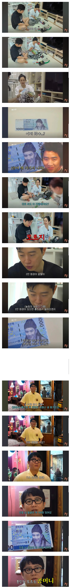

임요환 집에서 발견된 위조지폐 100여장...jpg
댓글
2222원권에 들어가시면 될듯
임요한이 콩을 너무 좋아해 ㅋ
가족사진도 같이 찍엇던데 ㅋㅋㅋㅋㅋ
그정도면 가족이지ㅋㅋㅋ
만날 때 마다 우승을 시켜 준다고? ㅋㅋㅋㅋ
3번연속 같은빌드을 허용해준다고? ㅋㅋㅋㅋ
거의 뭐 애착인형임
이츠 레이닝~ 머니~~~
머니~ 머니~ 머니~~
천원권 이이라서 콩콩사진임?
천원권 이이라서 콩콩사진임?
천원권은 퇴계이황
오천원권이 율곡이이
만원권 세종대왕
오만원권 신사임당
천원권은 퇴계이황
오천원권이 율곡이이
만원권 세종대왕
오만원권 신사임당
땡큐
치열하게 경쟁했던 레전드 둘이 저렇게 친한거 자체가 보기좋음
ㄹㅇ
근데 저거 실제화폐에 얼굴만 합성한정도라 방송에서 문제될수도있지않나
누가 봐도 실제 현금으로 착각할 수 없는 건 법적으로 괜춘
얼굴만 합성하는 정도로 이미 통용화폐가 아니라는 점을 알 수 있어서 괜찮음 ㅋㅋㅋㅋㅋ
위폐인거 티가 나게 만들고, 쓰지 않으면 문제는 안됨. 영상에서도 보면 합성도 했고 실제화폐랑 크기도 다르다고함.
위험해보이는데
저정도 차이는 괜찮을려나
촬영용도 넘버링은 떼고 찍던데
집에서 가지고 놀거라서 상관없을듯
촬영용은 일단 외부에 노출되니까 누가 주워갈수도 있으니 그렇겠지
발행번호가 없다 = 실제 지폐가 아님
얼굴이 콩이다 = 실제 지폐가 아님
같은 거임 ㅋㅋㅋㅋㅋ
콩은 벌어야 제맛
1이 2를 너무 좋아한
콩까지마콩까지마
세상에서 홍진호를 제일 좋아하는 팬은 임요한임
막짤 표정ㅋㅋㅋㅋㅋㅋㅋㅋ
액수가 왜 '콩원'이 아닌 것이냐
임요환의 '2만원권이 없잖아'라는 말이 무섭게 들린다 ㅋㅋㅋㅋㅋ
율곡 22
ㅋㅋㅋㅋㅋㅋㅋㅋㅋㅋㅋㅋㅋㅋㅋ
머야 ㅋㅋㅋㅋㅋㅋㅋㅋㅋㅋ
사람 아니야 콘
ㅋㅋㅋㅋㅋㅋㅋ
2만 원 권이 없잖아ㅋㅋㅋㅋㅋ